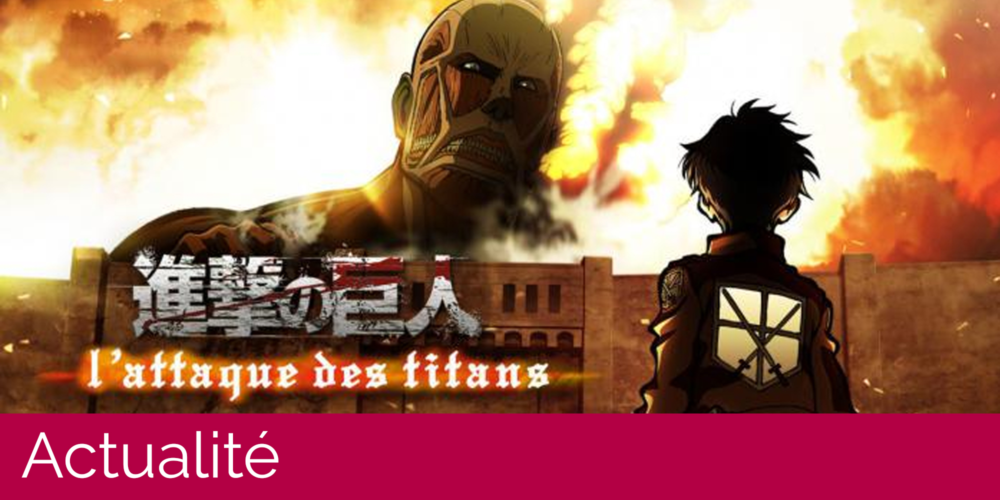

Actualité
Sortie du roman de l'Attaque des Titans - Before the Fall
Après plusieurs mois d'attente, ce roman tiré de l'univers de l'Attaque des Titans (Shingeki no Kyojin) arrive chez Pika Editions.
Lire la suiteMangaka, votre site 100% culture japonaise est ravi de vous accueillir !
Au quotidien : actualités, dossier, évènements sur vos mangas et animes préférés, ainsi que des reviews des derniers mangas, anime et jeux vidéo.
Après plusieurs mois d'attente, ce roman tiré de l'univers de l'Attaque des Titans (Shingeki no Kyojin) arrive chez Pika Editions.
Lire la suiteAprès un Death note par Netflix plus que contestable, l'annonce de l'adaptation de Your Name par J. J. Abrams fait trembler la communauté. Retour sur les dernières tentatives d'adaptation.
Lire la suite
Les 30 septembre et 1er octobre 2017, la 24e édition du salon Pa ouvre ses portes à Porte de Versailles.
Lire la suite